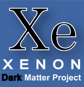
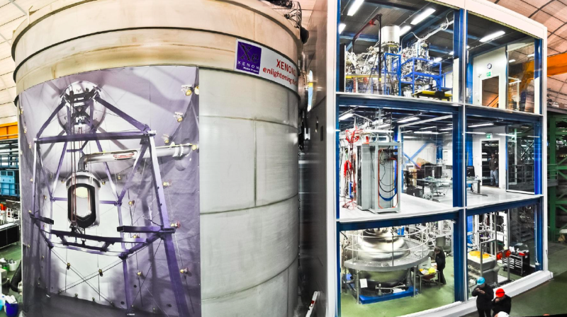
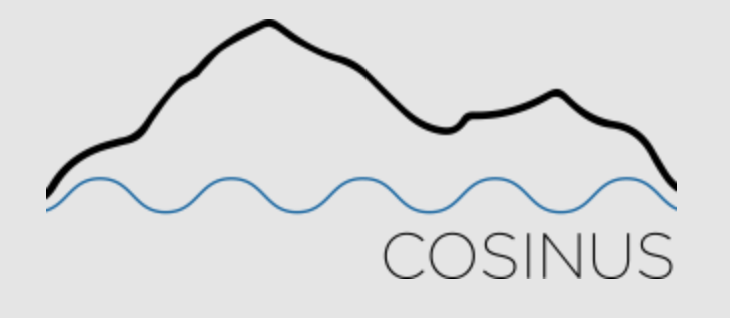
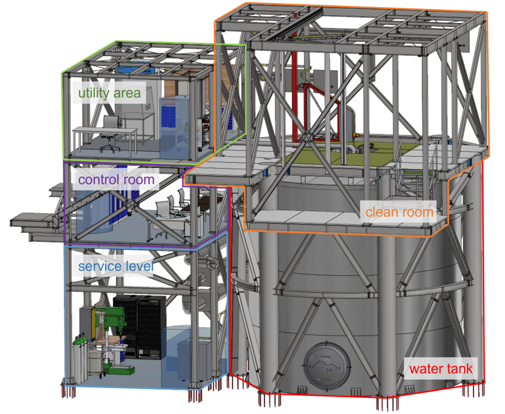

Dunkle Materie -
Kann man sie beweisen und wie weit ist die Forschung dazu?
Definition der dunklen Materie
Dunkle Materie ist Materie, die nicht mit Licht wechselwirkt, also unsichtbar bleibt, aber trotzdem die Gravitationsfelder im Universum stark beeinflusst. Wissenschaftler schließen darauf, weil verschiedene unabhängige Hinweise zusammenpassen: Messungen der kosmischen Hintergrundstrahlung, die Bewegungen von Galaxien und Galaxy-Clustern sowie Computersimulationen deuten darauf hin, dass zusätzlich zu der sichtbaren Materie noch eine große, unreduzierte Masse vorhanden sein muss. Ein bekanntes Indiz ist die Rotation von Galaxien: Die Sterne in den äußeren Regionen bewegen sich viel schneller als durch die sichtbare Materie allein erklärt werden könnte, wodurch Dunkle Materie die äußeren Bereiche der Galaxie ausfüllt. Auch Gravitationslinsen – das Verzerren von Licht durch Massen im Universum – ermöglichen es, Karten der Dunklen Materie-Halos zu erstellen. Die Wirkungen Dunkler Materie entstehen daher vor allem über Gravitation, nicht über elektromagnetische Strahlung. Ihre Wechselwirkung mit normaler, baryonischer Materie ist komplex, weshalb Forscher große Großsimulationen einsetzen, um kosmische Strukturen realistisch nachzubilden. Insgesamt stützt sich das Konzept der Dunklen Materie auf vielfältige, unabhängige Beobachtungen und Simulationen; ein direkter Nachweis bleibt jedoch Gegenstand aktueller Forschung.
Forschung und Ideen für Beweise
Guter wissenschaftlicher Ansatz bedeutet: Man macht eine Theorie mit bestimmten Vorhersagen, testet sie mit Experimenten in festgelegten Bedingungen (z. B. Energie oder Messweise) und vergleicht dann die Ergebnisse mit den Vorhersagen. Wenn die Experimente Bereiche ausschließen, wird das Modell angepasst oder verworfen. Der Forschungszyklus läuft so: Theorie liefert Modelle und Prognosen; Messungen prüfen diese Vorhersagen; anhand der Daten wird entschieden, ob man das Modell feinjustiert oder ob es aufgegeben wird; danach ergeben sich neue, prüfbare Vorhersagen. Beispiel (QCD): Man versucht zu verstehen, wie sich Materie bei sehr hohen Temperaturen verhalten könnte (Quark-Gluon-Plasma). In Experimente werden Teilchen-Kollisionen untersucht und Messwerte wie Spektren, Fluktuationen oder Strahlung gemessen. Dann vergleicht man diese Daten mit theoretischen Berechnungen. Wenn sie gut passen, verfeinert man das Modell weiter; passen sie nicht, sucht man neue Ideen oder erklärt Effekte, die man bisher nicht kannte.
Es gibt verschiedene Forschungsprojekte zum Beweisen dunkler Materie, hier sind zwei der letzten paar Jahre:
-
Das XENON Projekt
Das Projekt fand im italienischen Gran-Sasso-Untergrundlabor statt und sollte nach Wechselwirkungen zwischen dunkler Materie und Elektronen suchen.
Aufbau
Die Messungen finden in einer Zwei-Phasen-Zeitdetektionskammer(TPC) statt, die sich tief unter der Erde befindet, um störende Strahlung aus dem All zu vermeiden. Sie ist hauptsächlich mit flüssigem Xenon gefüllt, nur im oberen Teil befindet sich eine dünne Schicht gasförmiges Xenon. Das Xenon eignet sich deshalb so gut, weil es eine hohe Ordnungszahl und Dichte hat.
Funktionsweise
Wenn ein Teilchen auf eines der Xenonatome trifft entstehen zwei Signale: das sofortige Szintillationslicht(S1), und das Sekundäreszintillationslicht(S2).
Das Signal S1 entsteht wenn ein Teilchen auf ein Xenonatom trifft. Das Xenonatom wird dabei angeregt und gibt die Energie kurz später in Form von UV-Licht wieder ab.
Das Signal S2 entsteht kurze Zeit später wenn die Elektronen, die bei der Wechselwirkung zwischen dem Teilchen und dem Xenonatom freigesetzt werden, in die Gasphase(den Teil des TPC, wo das Xenon gasförmig ist) durch ein stärkeres elektrisches Feld beschleunigt werden. Dann regen sie die Xenonatome an, welche diese Energie wieder abgeben, als UV-Licht.
Beide Signale werden von Photomultipliern gemessen. Das Detektorenzentrum leitet diese Informationen dann weiter wo sie ausgewertet werden, um die Hintergrundsrahlung zu reduzieren. Das Verhältnis von S2 zu S1 zeigt an welche Art Teilchen die Wechselwirkung verursachte. WIMPs (Weakly Interacting Massive Particles; hypothetische dunkle Materie Teilchen) würden hauptsächlich mit dem Atomkern wechselwirken, weshalb ihr S2/S1 schwächer sein sollte als das von Elektronen oder Gammastrahlung.Stand/Ergebnisse
Der Detektor nahm 97 Tage lang Messungen vor und sammelte Daten. Die Messungen die herauskamen lassen sich allerdings vollständig durch die Hintergrundstrahlung erklären.

Das Logo des XENON-Projekts

Der XENON1T-Detektor
-
Das COSINUS Projekt
Am 18. April 2024 wurde das COSINUS Projekt zum Nachweis von Dunkler Materie eingeweiht. Beim DAMA/LIBRA Experiment bekamen die Forscher Daten die mit den Annahmen der dunklen Materieteilchen übereinstimmen. Jedoch blieben bei anderen Experimenten diese Übereinstimmung zwischen Annahme und gemessenen Daten aus. Das COSINUS Projekt soll überprüfen ob das DAMA/LIBRA Experiment tatsächlich Signale Dunkler Materie gemessen hat, da die Ergebnisse umstritten sind.
Aufbau
Das Herzstück von COSINUS ist ein Kryostat, eine Art Kühlschrank mit extremen Tief Temperaturen. Im Kryostat befindet sich ein Natriumiodidkristall, der auf 1 hundertstel Grad über dem absoluten Nullpunkt abgekühlt ist.
Funktionsweise
Wenn der Natriumiodidkristall von Dunkle-Materie-Teilchen getroffen wird, kommt es zu zwei Reaktionen: Erstens werden die Atome des Kristalls in Schwingung versetzt und heizen sich auf. Die dabei aufgenommene Wärmeenergie lässt sich äußerst genau messen. Zweitens entsteht im Kristall auch Licht das COSINUS ebenfalls messen kann.
Stand/Ergebnisse
Die erste große Phase der Datenauswertung läuft. Die ersten Ergebnisse werden Ende 2026 erwartet.

Das Logo des COSINUS-Projekts

Der Aufbau des COSINUS-Projekts